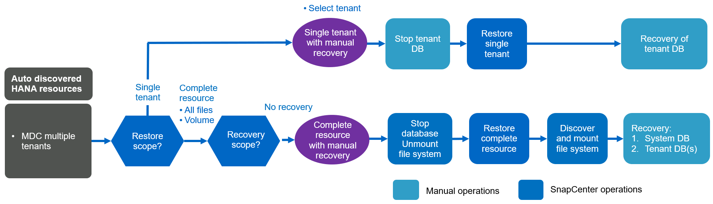

最佳實務做法
最佳實務做法
概念與最佳實務做法SnapCenter
 建議變更
建議變更
本節說明SnapCenter 與SAP HANA資源組態與部署相關的概念與最佳實務做法。
SAP HANA資源組態選項與概念
有了此功能、SAP HANA資料庫資源組態可透過兩種不同的方法執行。SnapCenter
-
*手動資源組態。*必須手動提供HANA資源和儲存設備佔用空間資訊。
-
*自動探索HANA資源。*自動探索可簡化SnapCenter 在還原中設定HANA資料庫的程序、並可實現自動化還原與還原。
請務必瞭SnapCenter 解、只有在自動探索的HANA資料庫資源、才會啟用自動還原與還原功能。在SnapCenter 還原作業完成SnapCenter 後、必須手動恢復在支援中手動設定的HANA資料庫資源。
另一方面、SnapCenter 並非所有HANA架構和基礎架構組態都支援使用支援使用支援的自動探索功能。因此、HANA環境可能需要混合式方法、有些HANA系統（HANA多主機系統）需要手動設定資源、而其他所有系統都可以使用自動探索來設定。
自動探索及自動還原與還原取決於在資料庫主機上執行OS命令的能力。例如檔案系統和儲存設備佔用空間探索、以及卸載、掛載或LUN探索作業。這些作業都是使用SnapCenter 隨HANA外掛程式一起自動部署的Linux套件來執行。因此、在資料庫主機上部署HANA外掛程式是必要的條件、以便自動探索、以及自動化還原與還原。在資料庫主機上部署HANA外掛程式之後、也可以停用自動探索。在此情況下、資源將是手動設定的資源。
下圖摘要說明相依性。有關HANA部署選項的詳細資訊、請參閱「SAP HANA外掛程式的部署選項」一節。


|
HANA和Linux外掛程式目前僅適用於Intel系統。如果HANA資料庫是在IBM Power Systems上執行、則必須使用中央HANA外掛主機。 |
支援HANA架構、可自動探索及自動恢復
除了HANA多個主機系統需要手動設定之外、大多數HANA組態都支援自動探索及自動還原與還原功能。SnapCenter
下表顯示自動探索所支援的HANA組態。
| Hana外掛程式安裝於： | Hana架構 | Hana系統組態 | 基礎架構 |
|---|---|---|---|
Hana資料庫主機 |
單一主機 |
|
|
|
|
Hana MDC系統支援多個租戶進行自動探索、但不支援使用目前SnapCenter 版本的自動還原與還原。 |
支援HANA架構、可手動設定HANA資源
所有HANA架構均支援手動設定HANA資源、但需要中央HANA外掛主機。中央外掛程式主機可以是SnapCenter 支援服務器本身、也可以是獨立的Linux或Windows主機。
|
|
HANA外掛程式部署於HANA資料庫主機時、預設會自動探索資源。可針對個別主機停用自動探索功能、以便部署外掛程式；例如、在啟用HANA系統複寫的資料庫主機上、SnapCenter 以及不支援自動探索的更新版本< 4.6上。如需詳細資訊、請參閱一節 "「停用HANA外掛主機上的自動探索功能。」" |
下表顯示手動HANA資源組態所支援的HANA組態。
| Hana外掛程式安裝於： | Hana架構 | Hana系統組態 | 基礎架構 |
|---|---|---|---|
中央外掛主機（SnapCenter 不支援支援的伺服器或獨立的Linux主機） |
單一或多個主機 |
|
|
SAP HANA外掛程式的部署選項
下圖顯示SnapCenter 了邏輯視圖、以及EView Server與SAP HANA資料庫之間的通訊。
透過SAP HANA外掛程式與SAP HANA資料庫進行通訊。SnapCenterSAP HANA外掛程式使用SAP HANA hdbsqll用戶端軟體、對SAP HANA資料庫執行SQL命令。SAP HANA hdbuserstore用於提供使用者認證、主機名稱及連接埠資訊、以存取SAP HANA資料庫。

|
|
SAP HANA外掛程式和SAP hdbsql用戶端軟體（包含hdbuserstore組態工具）必須一起安裝在同一部主機上。 |
主機可以是SnapCenter 獨立的中央外掛主機、或是個別的SAP HANA資料庫主機。
高可用度的伺服器SnapCenter
可在雙節點HA組態中設定。SnapCenter在這種組態中、負載平衡器（例如、F5）會使用指向作用SnapCenter 中的支援功能主機的虛擬IP位址、以主動/被動模式使用。這個系統庫（MySQL資料庫）是由Syndby2主機之間的相互複寫、因此整個系統的資料永遠保持同步。SnapCenter SnapCenter SnapCenter
如果將HANA外掛程式安裝在支援的伺服器上、則不支援使用支援的伺服器HA。SnapCenter SnapCenter如果您打算SnapCenter 在HA組態中設定、請勿在SnapCenter 該伺服器上安裝HANA外掛程式。如需SnapCenter 更多關於功能更新的詳細資訊、請參閱以下網站 "NetApp知識庫頁面"。
將伺服器當作中央HANA外掛主機SnapCenter
下圖顯示SnapCenter 將此伺服器用作中央外掛主機的組態。SAP HANA外掛程式和SAP hdbsql用戶端軟體安裝在SnapCenter Singe伺服器上。

由於HANA外掛程式可透過網路使用hdbClient與受管理的HANA資料庫進行通訊、SnapCenter 因此您不需要在個別HANA資料庫主機上安裝任何的任何元件。透過使用中央HANA外掛主機來保護HANA資料庫、所有使用者存放區金鑰都是針對託管資料庫進行設定。SnapCenter
另一方面、為了自動探索、還原與還原自動化以及SAP系統更新作業的強化工作流程自動化、則需要SnapCenter 在資料庫主機上安裝支援元件。使用中央HANA外掛主機時、無法使用這些功能。
此外SnapCenter 、當HANA外掛程式安裝在SnapCenter 整個伺服器上時、也無法使用使用內部建置HA功能的高可用度伺服器。如果VMware叢集內的VM中執行了VMware HA、則可以使用VMware HA來實現高可用度SnapCenter 。
將主機分隔為中央HANA外掛主機
下圖顯示將獨立Linux主機用作中央外掛主機的組態。在此情況下、SAP HANA外掛程式和SAP hdbsql用戶端軟體會安裝在Linux主機上。
|
|
獨立的中央外掛程式主機也可以是Windows主機。 |

上一節所述的功能可用度限制、也適用於個別的中央外掛程式主機。
不過SnapCenter 、使用此部署選項、即可設定採用內部建置HA功能的伺服器。例如、使用Linux叢集解決方案時、中央外掛程式主機也必須是HA。
HANA外掛程式部署於個別HANA資料庫主機上
下圖顯示每個SAP HANA資料庫主機上安裝SAP HANA外掛程式的組態。

當HANA外掛程式安裝在每個個別HANA資料庫主機上時、所有功能（例如自動探索、自動還原與還原）都可使用。此外、還可以在HA組態中設定此伺服器SnapCenter 。
混合式HANA外掛部署
如本節開頭所述、部分HANA系統組態（例如多主機系統）需要中央外掛主機。因此SnapCenter 、大多數的不穩定組態都需要混合部署HANA外掛程式。
NetApp建議針對所有支援自動探索的HANA系統組態、在HANA資料庫主機上部署HANA外掛程式。其他HANA系統（例如多主機組態）則應使用中央HANA外掛主機來管理。
以下兩個圖顯示SnapCenter 混合式外掛程式部署、無論是搭配使用此功能的伺服器、或是以獨立的Linux主機作為中央外掛程式主機。這兩種部署之間唯一的差異是選用HA組態。


摘要與建議
一般而言、NetApp建議您在每部SAP HANA主機上部署HANA外掛程式、以啟用所有可用SnapCenter 的功能、並強化工作流程自動化。
|
|
HANA和Linux外掛程式目前僅適用於Intel系統。如果HANA資料庫是在IBM Power Systems上執行、則必須使用中央HANA外掛主機。 |
若HANA組態不支援自動探索、例如HANA多主機組態、則必須設定額外的中央HANA外掛主機。如果SnapCenter VMware HA可用於SnapCenter VMware HA、則中央外掛主機可以是VMware的伺服器。如果您打算使用SnapCenter 內部建置的HA功能、請使用獨立的Linux外掛主機。
下表摘要說明不同的部署選項。
| 部署選項 | 相依性 |
|---|---|
安裝於SnapCenter 支援服務器的中央HANA外掛程式主機外掛程式 |
優點：單一HANA外掛程式、中央HDB使用者儲存區組態 SnapCenter 在個別HANA資料庫主機上不需要任何功能性軟體元件*支援所有HANA架構缺點： *手動資源組態*手動還原*不支援單一租戶還原*任何指令碼前及後置步驟都會在中央外掛程式主機上執行*不SnapCenter 支援內部建置的可靠性*在所有受管理的HANA資料庫中、SID和租戶名稱的組合必須是唯一的*記錄 所有受管理的HANA資料庫均啟用/停用備份保留管理 |
中央HANA外掛程式主機外掛程式安裝在獨立的Linux或Windows伺服器上 |
優點：單一HANA外掛程式、中央HDB使用者儲存區組態 SnapCenter 個別HANA資料庫主機不需要任何功能性軟體元件*支援所有HANA架構*內部建置SnapCenter 的功能不支援高可用度缺點： *手動資源組態*手動還原*不支援單一租戶還原*在中央外掛程式主機上執行任何指令碼前與後置步驟*在所有受管理的HANA資料庫中、必須將SID與租戶名稱組合為唯一*所有受管理的系統均啟用/停用記錄備份保留管理 Hana資料庫 |
安裝在HANA資料庫伺服器上的個別HANA外掛程式主機外掛程式 |
優點：自動探索HANA資源*自動還原與還原*單一租戶還原*用於SAP系統更新的指令碼前與指令碼後自動化 SnapCenter 支援內部建置的功能、以提供優異的可用度*可針對每個個別HANA資料庫啟用/停用記錄備份保留管理缺點： 不支援所有HANA架構。HANA多個主機系統需要額外的中央外掛主機。 HANA外掛程式必須部署在每個HANA資料庫主機上 |
資料保護策略
在設定SnapCenter 功能完善的功能和SAP HANA外掛程式之前、必須根據各種SAP系統的RTO和RPO需求來定義資料保護策略。
常見的方法是定義系統類型、例如正式作業、開發、測試或沙箱系統。同一系統類型的所有SAP系統通常具有相同的資料保護參數。
必須定義的參數包括：
-
Snapshot備份應多久執行一次？
-
Snapshot複本備份應保留在主要儲存系統上多久？
-
應多久執行一次區塊完整性檢查？
-
主要備份是否應該複寫到異地備份站台？
-
備份應保留在異地備份儲存設備上多久？
下表顯示系統類型的正式作業、開發及測試資料保護參數範例。對於正式作業系統、已定義高備份頻率、而且備份每天會複寫到異地備份站台一次。測試系統的需求較低、而且沒有複寫備份。
| 參數 | 正式作業系統 | 開發系統 | 測試系統 |
|---|---|---|---|
備份頻率 |
每4小時 |
每4小時 |
每4小時 |
主要保留 |
2天 |
2天 |
2天 |
區塊完整性檢查 |
每週一次 |
每週一次 |
否 |
複寫到異地備份站台 |
每天一次 |
每天一次 |
否 |
異地備份保留 |
2週 |
2週 |
不適用 |
下表顯示必須針對資料保護參數設定的原則。
| 參數 | PolicyLocalSnap | PolicyLocalSnapAndSnapVault | PolicyBlockIntegrityCheck |
|---|---|---|---|
備份類型 |
快照型 |
快照型 |
檔案型 |
排程頻率 |
每小時 |
每日 |
每週 |
主要保留 |
計數= 12 |
計數= 3 |
計數= 1 |
內部複寫SnapVault |
否 |
是的 |
不適用 |
「本地Snapshot」原則用於正式作業、開發及測試系統、以保留兩天的時間來涵蓋本機Snapshot備份。
在資源保護組態中、系統類型的排程定義不同：
-
*製作。*每4小時排程一次。
-
*開發。*每4小時排程一次。
-
*測試。*每4小時排程一次。
「LocalSnapAndSnapVault」原則用於正式作業與開發系統、以涵蓋每日複寫至異地備份儲存設備的作業。
在資源保護組態中、排程是針對正式作業和開發所定義：
-
*製作。*每天排程。
-
*開發。*每天排程。
「BlockIntegrityCheck」原則用於正式作業和開發系統、以檔案型備份來涵蓋每週區塊完整性檢查。
在資源保護組態中、排程是針對正式作業和開發所定義：
-
*製作。*每週排程。
-
*開發。*每週排程。
對於使用異地備份原則的每個SAP HANA資料庫、必須在儲存層設定保護關係。保護關係可定義要複寫哪些磁碟區、以及將備份保留在異地備份儲存設備上。
舉例來說、每個正式作業與開發系統的異地備份儲存設備都會保留兩週。
|
|
在我們的範例中、SAP HANA資料庫資源和非資料Volume資源的保護原則和保留不一樣。 |
備份作業
SAP推出採用HANA 2.0 SPS4的多租戶系統、支援Snapshot備份。支援多租戶的HANA MDC系統Snapshot備份作業。SnapCenter此外、支援HANA MDC系統的兩種不同還原作業。SnapCenter您可以還原整個系統、系統資料庫和所有租戶、也可以只還原單一租戶。有一些先決條件可讓SnapCenter 支援執行這些作業的功能。
在MDC系統中、租戶組態不一定是靜態的。可以新增租戶或刪除租戶。無法仰賴HANA資料庫新增至還原時所發現的組態。SnapCenter SnapCenter執行備份作業時、必須知道哪些租戶可用。SnapCenter
若要啟用單一租戶還原作業、SnapCenter 必須知道每個Snapshot備份中包含哪些租戶。此外、還必須知道哪些檔案和目錄屬於Snapshot備份所包含的每個租戶。
因此、在每次備份作業中、工作流程的第一步是取得租戶資訊。其中包括租戶名稱、以及對應的檔案和目錄資訊。此資料必須儲存在Snapshot備份中繼資料中、才能支援單一租戶還原作業。下一步是Snapshot備份作業本身。此步驟包含SQL命令、可觸發HANA備份儲存點、儲存Snapshot備份、以及SQL命令來關閉Snapshot作業。HANA資料庫會使用Close命令、更新系統資料庫和每個租戶的備份目錄。
|
|
當一或多個租戶停止時、SAP不支援針對MDC系統進行Snapshot備份作業。 |
為了保留資料備份和HANA備份目錄管理、SnapCenter 必須針對系統資料庫和第一步中識別的所有租戶資料庫、執行目錄刪除作業。如同記錄備份一樣、SnapCenter 非同步工作流程必須在備份作業的每個租戶上運作。
下圖顯示備份工作流程的總覽。

HANA資料庫Snapshot備份的備份工作流程
以下列順序備份SAP HANA資料庫：SnapCenter
-
從HANA資料庫讀取租戶清單。SnapCenter
-
從HANA資料庫讀取每個租戶的檔案和目錄。SnapCenter
-
租戶資訊會儲存在此SnapCenter 備份作業的元資料中。
-
可觸發SAP HANA全域同步備份儲存點、以便在持續層上建立一致的資料庫映像。SnapCenter
對於SAP HANA MDC單一或多個租戶系統、系統資料庫和每個租戶資料庫都會建立同步的全域備份儲存點。 -
此功能可為所有為資源設定的資料磁碟區建立儲存Snapshot複本。SnapCenter在單一主機HANA資料庫的範例中、只有一個資料磁碟區。有了SAP HANA多主機資料庫、就有多個資料磁碟區。
-
可在SAP HANA備份目錄中登錄儲存Snapshot備份。SnapCenter
-
支援刪除SAP HANA備份儲存點。SnapCenter
-
針對資源中所有已設定的資料磁碟區、執行更新以更新功能。SnapCenter SnapVault
此步驟僅在所選原則包含SnapVault 不含任何功能的SnapMirror複寫時執行。 -
根據主儲存設備上針對備份所定義的保留原則、將儲存Snapshot複本及其資料庫及SAP HANA備份目錄中的備份項目刪除。SnapCenterHana備份目錄作業是針對系統資料庫和所有租戶進行。
如果次要儲存設備仍有備份可用、則不會刪除SAP HANA目錄項目。 -
還原刪除檔案系統和SAP HANA備份目錄中的所有記錄備份、這些記錄備份比SAP HANA備份目錄中識別的最舊資料備份還舊。SnapCenter這些作業是針對系統資料庫和所有租戶執行。
只有在記錄備份管理未停用時、才會執行此步驟。
區塊完整性檢查作業的備份工作流程
下列順序執行區塊完整性檢查：SnapCenter
-
從HANA資料庫讀取租戶清單。SnapCenter
-
針對系統資料庫和每個租戶觸發檔案型備份作業。SnapCenter
-
根據針對區塊完整性檢查作業所定義的保留原則、將檔案型備份刪除至資料庫、檔案系統及SAP HANA備份目錄。SnapCenter系統資料庫和所有租戶都會在檔案系統上刪除備份、並執行HANA備份目錄作業。
-
還原刪除檔案系統和SAP HANA備份目錄中的所有記錄備份、這些記錄備份比SAP HANA備份目錄中識別的最舊資料備份還舊。SnapCenter這些作業是針對系統資料庫和所有租戶執行。
|
|
只有在記錄備份管理未停用時、才會執行此步驟。 |
資料與記錄備份的備份保留管理與管理
資料備份保留管理與記錄備份管理可分為五大領域、包括保留管理：
-
主儲存設備的本機備份
-
檔案型備份
-
在二線儲存設備上進行備份
-
SAP HANA備份目錄中的資料備份
-
在SAP HANA備份目錄和檔案系統中記錄備份
下圖概述不同的工作流程、以及每項作業的相依性。以下各節將詳細說明不同的作業。

主儲存設備的本機備份保留管理
透過刪除主儲存區和整個資訊庫中的Snapshot複本、並根據《支援還原原則》中定義的保留內容、來處理SAP HANA資料庫備份和非資料Volume備份的管理工作。SnapCenter SnapCenter SnapCenter
保留管理邏輯會在SnapCenter 每個支援工作流程中執行、
|
|
請注意SnapCenter 、針對排程備份和隨需備份、本產品可個別處理保留管理。 |
主儲存設備的本機備份也可在SnapCenter 還原中手動刪除。
檔案型備份的保留管理
透過刪除檔案系統上的備份、並根據《支援還原原則》中定義的保留資料、支援內部管理檔案型備份。SnapCenter SnapCenter
保留管理邏輯會在SnapCenter 每個支援工作流程中執行、
|
|
請注意SnapCenter 、針對排程或隨需備份、個別處理保留管理。 |
二線儲存設備備份的保留管理
根據ONTAP 《保護關係》中定義的保留、由效益分析部處理二線儲存設備備份的保留管理ONTAP 。
若要同步SnapCenter 處理這些變更到位在內存庫中的二線儲存設備、SnapCenter 請使用排程的清理工作。這項清理工作會將所有二線儲存設備備份與SnapCenter 所有SnapCenter 支援各種功能的還原庫同步。
根據預設、清除工作每週排程一次。相SnapCenter 較於已刪除的二線儲存設備備份、這份每週排程會導致刪除還原及SAP HANA Studio中的備份作業延遲。為了避免這種不一致的情況、客戶可以將排程變更為較高的頻率、例如每天一次。
|
|
您也可以按一下資源拓撲檢視中的重新整理按鈕、手動觸發個別資源的清除工作。 |
如需如何調整清理工作排程或觸發手動重新整理的詳細資訊、請參閱一節 "「變更與異地備份儲存設備進行備份同步的排程頻率。」"
SAP HANA備份目錄中的資料備份保留管理
當支援刪除任何備份、本機Snapshot或檔案型備份、或已在二線儲存設備上識別出刪除備份時、此資料備份也會在SAP HANA備份目錄中刪除。SnapCenter
刪除主儲存區的本機Snapshot備份SAP HANA目錄項目之前SnapCenter 、此功能會檢查次要儲存區是否仍存在備份。
記錄備份的保留管理
SAP HANA資料庫會自動建立記錄備份。這些記錄備份會在SAP HANA設定的備份目錄中、為每個SAP HANA服務建立備份檔案。
轉送恢復不再需要舊於最新資料備份的記錄備份、因此可以刪除。
執行下列步驟、即可在檔案系統層級和SAP HANA備份目錄中、妥善管理記錄檔備份：SnapCenter
-
可讀取SAP HANA備份目錄、取得最舊且成功的檔案型或Snapshot備份的備份ID。SnapCenter
-
還原刪除SAP HANA目錄中的所有記錄備份、以及早於此備份ID的檔案系統。SnapCenter
|
|
僅處理由還原所建立備份的內部管理作業。SnapCenter SnapCenter如果在SnapCenter 不支援的情況下建立其他檔案型備份、您必須確定已從備份目錄中刪除檔案型備份。如果這類資料備份未從備份目錄手動刪除、則可能會成為最舊的資料備份、而且在刪除此檔案型備份之前、不會刪除舊版記錄備份。 |
|
|
即使在原則組態中為隨需備份定義了保留、但只有在執行另一個隨需備份時、才會執行內部管理。因此、通常必須在SnapCenter 還原中手動刪除隨需備份、以確保這些備份也會在SAP HANA備份目錄中刪除、而且記錄備份管理作業不會以舊的隨需備份為基礎。 |
預設會啟用記錄備份保留管理。如有必要、可依照一節所述停用 "「停用HANA外掛主機上的自動探索功能。」"
Snapshot備份的容量需求
您必須考量儲存層的區塊變更率、相對於傳統資料庫的變更率。由於資料行儲存區的HANA表格合併程序、因此完整的資料表會寫入磁碟、而不只是變更的區塊。
如果一天內進行多個Snapshot備份、則客戶群的資料顯示每日變更率介於20%到50%之間。在這個目標上、如果每天只複寫一次、則每日變更率通常會較低。SnapVault
還原與還原作業
利用功能還原作業SnapCenter
從HANA資料庫的觀點來看SnapCenter 、支援兩種不同的還原作業。
-
*還原完整資源。*還原HANA系統的所有資料。如果HANA系統包含一或多個租戶、系統資料庫的資料和所有租戶的資料都會還原。
-
*還原單一租戶。*只會還原所選租戶的資料。
從儲存層面來看、上述還原作業必須根據使用的儲存傳輸協定（NFS或Fibre Channel SAN）、已設定的資料保護（無論是否具有異地備份儲存設備的主儲存設備）、以不同的方式執行。 以及要用於還原作業的選定備份（從主要或異地備份儲存設備還原）。
從主儲存設備還原完整資源
從一線儲存設備還原完整資源時SnapCenter 、支援兩ONTAP 種不同的功能、以執行還原作業。您可以選擇下列兩項功能：
-
* Volume型SnapRestore 的功能。*以Volume為基礎SnapRestore 的功能可將儲存磁碟區的內容還原為所選Snapshot備份的狀態。
-
Volume Revert核取方塊可用於使用NFS自動探索的資源。
-
完成資源選項按鈕、以取得手動設定的資源。
-
-
*檔案型SnapRestore 的功能性。*檔案SnapRestore 型的功能性、也稱為單一檔案SnapRestore 功能、可還原所有個別檔案（NFS）或所有LUN（SAN）。
-
自動探索資源的預設還原方法。可以使用NFS的Volume Revert（磁碟區還原）核取方塊進行變更。
-
手動設定資源的檔案層級選項按鈕。
-
下表提供不同還原方法的比較。
| Volume型SnapRestore 的功能 | 檔案SnapRestore 型的功能 | |
|---|---|---|
還原作業速度 |
非常快速、獨立於磁碟區大小 |
還原作業非常快速、但在儲存系統上使用背景複製工作、這會封鎖新Snapshot備份的建立 |
Snapshot備份記錄 |
還原至舊的Snapshot備份、移除所有更新的Snapshot備份。 |
沒有影響力 |
目錄結構還原 |
目錄結構也會還原 |
NFS：僅還原個別檔案、而非目錄結構。如果目錄結構也遺失、則必須在執行還原作業之前手動建立目錄結構：也會還原目錄結構 |
設定複寫至異地備份儲存設備的資源 |
無法對快照複本備份執行Volume型還原、該備份比SnapVault 用於進行同步的Snapshot複本舊 |
可以選擇任何Snapshot備份 |
從異地備份儲存設備還原完整資源
從異地備份儲存設備還原時、一律使用SnapVault 還原作業執行、其中儲存磁碟區的所有檔案或所有LUN都會被Snapshot備份內容覆寫。
還原單一租戶
還原單一租戶需要檔案型還原作業。根據所使用的儲存傳輸協定、SnapCenter 不同的還原工作流程會由還原執行。
-
NFS：
-
主儲存設備：會SnapRestore 針對租戶資料庫的所有檔案執行檔案型的功能。
-
異地備份儲存：SnapVault 針對租戶資料庫的所有檔案執行還原作業。
-
-
SAN：
-
主儲存設備：複製LUN並將其連接至資料庫主機、然後複製租戶資料庫的所有檔案。
-
異地備份儲存設備：複製LUN並將其連接至資料庫主機、然後複製租戶資料庫的所有檔案。
-
還原及還原自動探索的HANA單一容器和MDC單一租戶系統
Hana單一容器和HANA MDC單一租戶系統已自動探索、可利用SnapCenter 效益技術自動還原及還原。針對這些HANA系統SnapCenter 、支援三種不同的還原與還原工作流程、如下圖所示：
-
單一租戶搭配手動恢復。 SnapCenter 如果您選擇單一租戶還原作業、則會列出選定Snapshot備份中所包含的所有租戶。您必須手動停止及恢復租戶資料庫。使用支援功能還原作業SnapCenter 是透過SnapRestore NFS的單一檔案還原作業來完成、或是複製、掛載、複製SAN環境的作業。
-
*利用自動恢復功能來完成資源。*如果您選擇完整的資源還原作業和自動恢復、則整個工作流程將會自動執行SnapCenter 以供參考。支援最新狀態、時間點或特定備份還原作業。SnapCenter選取的還原作業用於系統和租戶資料庫。
-
以手動還原完成資源。 SnapCenter 如果您選取「No Recovery」（無還原）、則會停止HANA資料庫、並執行所需的檔案系統（卸載、掛載）和還原作業。您必須手動還原系統和租戶資料庫。

自動探索的HANA MDC多租戶系統之還原與還原
雖然可以自動探索具有多個租戶的HANA MDC系統、但目前SnapCenter 版本的版本不支援自動還原與還原。針對具有多個租戶的MDC系統SnapCenter 、支援兩種不同的還原與還原工作流程、如下圖所示：
-
單一租戶、可手動恢復
-
以手動還原完成資源
工作流程與上一節所述相同。

手動設定HANA資源的還原與還原
手動設定的HANA資源無法自動還原與還原。此外、對於具有單一或多個租戶的MDC系統、不支援單一租戶還原作業。
針對手動設定的HANA資源、SnapCenter 如下圖所示、僅支援手動恢復。手動還原的工作流程與前幾節所述相同。

摘要還原與還原作業
下表摘要說明SnapCenter 還原與還原作業、具體取決於還原中的HANA資源組態。
| 資源組態SnapCenter | 還原與還原選項 | 停止HANA資料庫 | 在還原作業之前卸載、還原作業之後掛載 | 恢復作業 |
|---|---|---|---|---|
自動探索單一容器的MDC單一租戶 |
|
以SnapCenter 功能自動化 |
以SnapCenter 功能自動化 |
以SnapCenter 功能自動化 |
|
以SnapCenter 功能自動化 |
以SnapCenter 功能自動化 |
手冊 |
|
|
手冊 |
不需要 |
手冊 |
|
自動探索多個MDC租戶 |
|
以SnapCenter 功能自動化 |
以SnapCenter 功能自動化 |
手冊 |
|
手冊 |
不需要 |
手冊 |
|
所有手動設定的資源 |
|
手冊 |
手冊 |
手冊 |